第 1 讲：3D 角色动画导论——从关键帧到物理与学习
一张地图看清角色动画的全部技术路线：关键帧、动作捕捉、物理仿真、强化学习与生成模型各自解决什么问题。
◆ 学完这一讲，你应该能
能复述角色动画在 3D 图形流水线中的位置，以及它与几何、渲染的分工。
能区分运动学（关键帧/动捕）与物理仿真（动力学）两类方法的核心差异与适用场景。
能解释正向运动学（FK）与反向运动学（IK）的区别，并说出它们在动画制作中的用途。
能描述动作捕捉、动作重定向、动作图/状态机、Motion Matching 的基本流程与工程价值。
能说明 PD 控制、轨迹优化、抽象模型、深度强化学习在物理角色动画中的角色。
能建立“控制信号→运动模型→下一状态”的统一视角，理解生成模型与跨模态合成的定位。
核心结论速记
角色动画的本质是生成人体（或生物）关节随时间的运动，核心难点是高维、受物理约束且需自然可信。
角色动画方法可分成两大阵营：运动学方法（直接编辑姿态/速度）与物理方法（施力/力矩，由仿真产生运动）。
关键帧动画依赖动画师手工摆姿势并插值，是工业界最成熟、最可控的管线基础。
动作捕捉提供高质量真实数据，但需要重定向（retargeting）才能适配不同骨架与体型。
动作图/状态机把片段组织成可交互系统，Motion Matching 用数据库检索替代手工连边，显著降低状态机复杂度。
物理方法用 PD 控制器跟踪目标姿态，或用轨迹优化、抽象模型、强化学习生成控制策略，能产生真实接触与交互。
学习型方法（生成模型、跨模态合成）让角色能从文本、音频、稀疏传感器等信号生成动作，是当前研究前沿。
所有方法最终都落在同一个抽象上：给定当前状态与控制信号，产生下一状态；区别只在“运动模型”是运动学还是物理仿真。
011. 角色动画在 3D 图形流水线中的位置
先建立全局图景。3D 计算机图形学通常被拆成三大块：几何（Geometry）负责“长什么样”，动画（Animation）负责“怎么动”，渲染（Rendering）负责“看起来如何”。角色动画属于中间那块，它的输出是一串随时间变化的姿态（pose），渲染再把这些姿态画成像素。
课件进一步把 3D 计算机动画分成两类：
- 仿真动画（Simulation）：刚体、可变形体、绳索、薄壳、布料、流体、烟雾、声音……这类动画由物理规律驱动，目标是“现象真实”。
- 角色动画（Character Animation）：人、动物、虚拟生物、手、机器人、人群……这类动画由行为与控制驱动，目标是“行为可信”。
注意课件在仿真动画后面加了“+ Control”，在角色动画后面也强调“Behavior”。这说明角色动画不是纯物理仿真：它需要控制，让角色按导演/玩家的意图行动，而不是像一块布一样被动飘动。
为什么角色动画值得单独开一门课？课件给了一个关键数字：一个角色通常有几十个关节（joints），对应几十到上百个自由度参数。这个维度没有高到无法手工编辑（所以关键帧动画在工业界可行），但也没有低到可以穷举（所以需要系统的方法论）。正是这个“中等偏高维度”的特性，造就了角色动画方法百花齐放的格局。
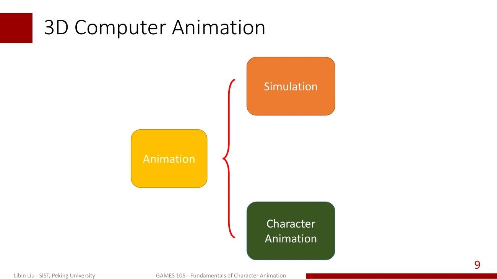
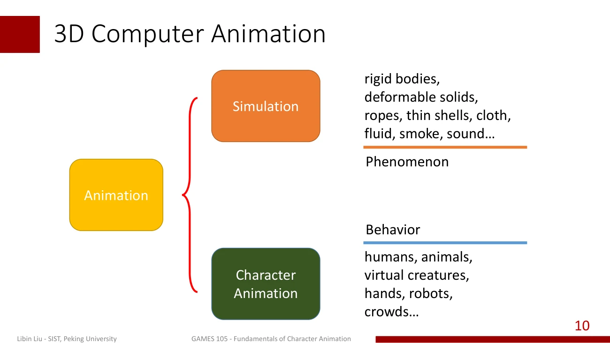
常见坑
把角色动画等同于物理仿真 → 忽略“控制/行为”这一层 → 做出来的角色像布娃娃，无法按意图行动。
以为自由度越高越难做 → 实际上角色动画的难点更多在于物理约束与自然性，而非单纯维度。
UE / Unity 落地
UE：角色动画系统（Animation Blueprint、State Machine、Control Rig）属于“动画”层，与渲染层（材质、Lumen）解耦；物理仿真（Chaos Physics）可驱动布娃娃或物理资产。
Unity：Animator/Playable Graph 负责动画层，Rigidbody/ArticulationBody 负责物理层，二者通过 Animator 与物理组件的更新顺序协作。
022. 运动从哪来：神经→肌肉→力→姿态，以及两条技术路线
课件用一条因果链回答“运动从哪来”：神经元兴奋（Neuronal excitation）→ 肌肉激活（Muscle activation）→ 作用于骨骼肌肉系统的力/力矩（Forces/torques）→ 物理 → 身体姿态（Body pose）。这是生物体的真实产生过程。
角色动画的两大方法，本质上是在这条链的不同位置“切入”：
- 运动学方法（Keyframe-based / Kinematic）：跳过力和物理，直接更新角色的姿态/速度/加速度。相当于直接指定结果，不关心肌肉怎么发力。
- 物理方法（Physics-based / Dynamic）：在“力/力矩”这一层施加控制，让物理仿真产生姿态。相当于指定原因，让结果自然涌现。
课件反复用一张“方法地图”来组织全讲：横轴是控制层级（高层目标 high-level goals ↔ 低层控制 low-level control），纵轴是方法家族。运动学方法擅长低层控制（精确摆姿势），物理方法既能做低层控制（PD 跟踪），也能接受高层目标（“去给我拿杯水”）。
一个重要的工程直觉：运动学方法可控、可编辑、成本低，但不保证物理合理，也难以与环境真实交互；物理方法能产生真实接触与受力，但控制难、调参难、计算贵。后面所有方法（动捕、动作图、强化学习、生成模型）都可以放到这张地图上定位。
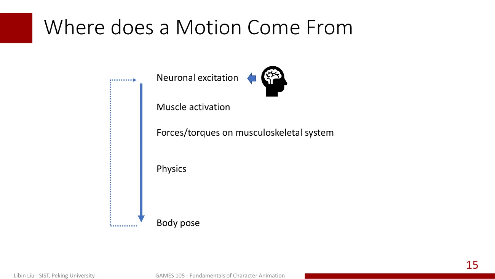
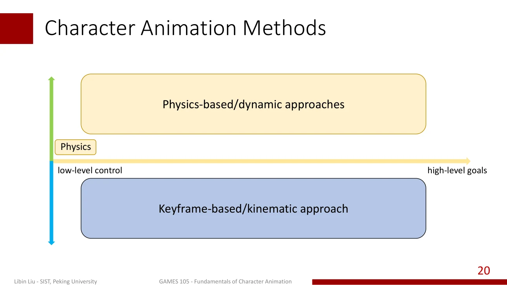
常见坑
把运动学方法当成“不物理所以没用” → 实际上工业管线中大量动画仍是运动学的，因为可控、可编辑、便宜。
把物理方法当成“全自动” → 物理方法仍需要控制信号（目标姿态、奖励函数等），不是撒手不管。
UE / Unity 落地
UE：Animation Blueprint 里的 Pose 计算属于运动学层；Physics Asset + 约束属于物理层；Control Rig 可在运动学层做程序化编辑。
Unity：Animator 的肌肉/骨骼动画是运动学；ArticulationBody 或 Ragdoll 是物理层；二者可通过 Physics.Raycast 等交互。
033. 运动学主线：关键帧、FK/IK 与插值
运动学方法最典型的代表是关键帧动画（Keyframe Animation）：动画师在时间轴上摆出若干关键姿态，软件在关键帧之间做插值（Interpolation），生成连续运动。课件引用了《The Animator's Survival Kit》和迪士尼十二动画原则，强调关键帧动画不仅是技术，更是表演艺术。
在 3D 实现中，关键帧动画依赖两个基础工具：
- 正向运动学（Forward Kinematics, FK）：已知每个关节的旋转，计算末端执行器（end-effector，如手、脚）的位置。这是“从根到末梢”的累乘变换，天然适合关键帧摆姿势。
- 反向运动学（Inverse Kinematics, IK）：已知末端执行器的目标位置，反解每个关节的旋转。适合“手要按在桌上”“脚要踩稳地面”这类约束型任务。
课件把关键帧动画定位在方法地图的“低层控制”一侧：动画师直接控制每个关节。它的优点是精确、可编辑、可复用；缺点是劳动密集（labor-intensive），且难以实时交互生成。
工程上，关键帧动画是几乎所有商业游戏的动画基础：即使使用动捕，动画师仍要在关键帧上做清理、加帧、修型。理解 FK/IK 与插值，是读懂后续所有动画系统的前提。
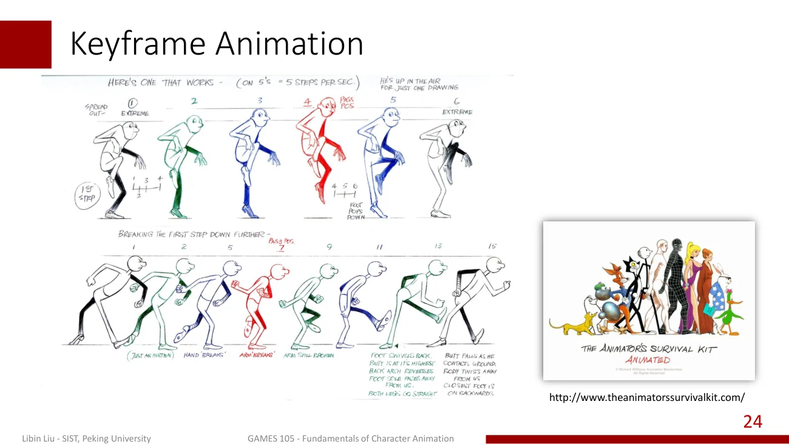
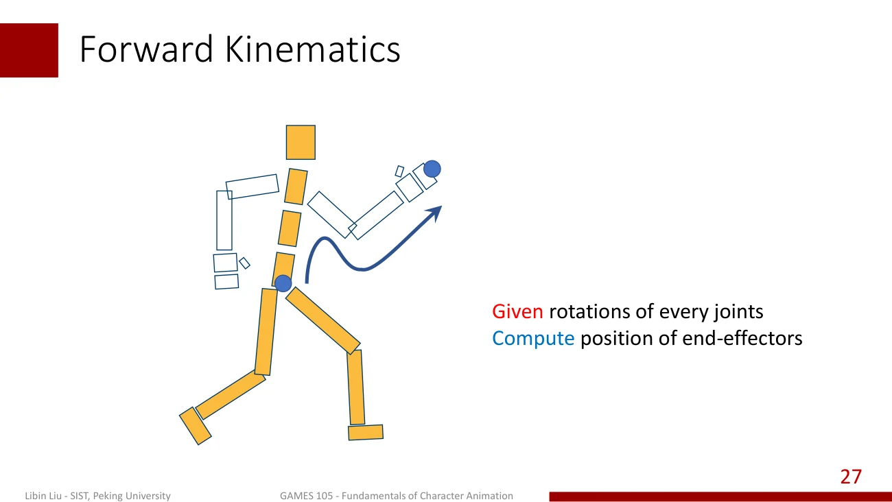
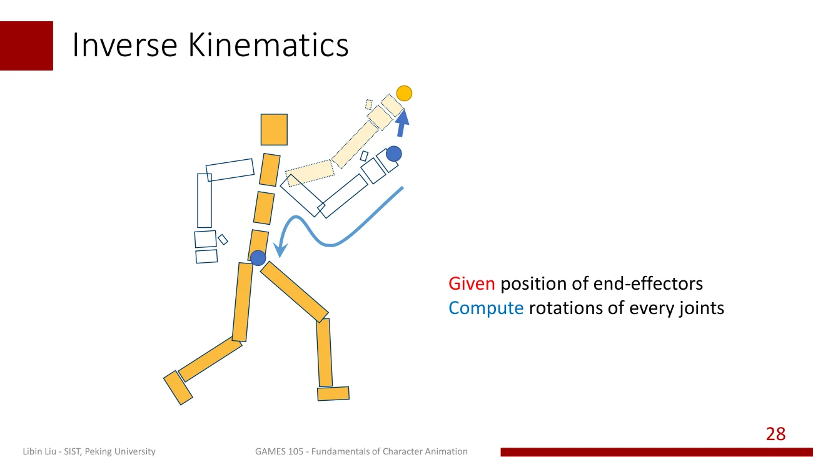
常见坑
IK 目标不可达时直接硬解 → 关节出现翻转或拉伸 → 需要加关节限位、阻尼或分段求解。
关键帧插值默认线性 → 运动显得机械 → 应使用贝塞尔/样条或缓入缓出曲线。
UE / Unity 落地
UE：Animation Sequence 里可打关键帧；Control Rig 提供 FK/IK 节点；Anim Blueprint 的 Modify Bone 可做程序化修正。
Unity：Animation Clip 记录关键帧；Animation Rigging 包提供 TwoBoneIK、MultiAim 等约束。
044. 数据驱动主线：动作捕捉、重定向与动作图
当手工关键帧成本太高时，工业界转向动作捕捉（Motion Capture）：让真人演员穿上动捕服表演，直接记录关节运动。课件展示了《战神：诸神黄昏》的幕后动捕、光学动捕、以及基于视频的 2D/3D 姿态估计（如 OpenPose、DeepMotion）。
动捕数据不能直接套到任意角色上，因为源角色和目标角色的骨架尺寸、骨骼数量、拓扑结构可能不同。这就需要动作重定向（Motion Retargeting）：把源角色的运动映射到目标角色，同时保持语义（比如“手放在桌上”）。课件引用了 Aberman et al. 2020 的工作，说明这是活跃的研究方向。
有了大量动捕片段后，如何组织成可交互系统？答案是动作图/状态机（Motion Graphs / State Machines）：节点是动作片段，边是允许的过渡。玩家输入触发状态切换。课件展示了 Heck & Gleicher 2007 的参数化动作图，以及 UE 论坛上“状态机面条”的经典吐槽——状态一多，手工连边就爆炸。
Motion Matching 是近年来的工程答案：不再手工连边，而是每帧在动作数据库中检索“与当前姿态和未来轨迹最匹配”的下一帧。它把“连边”变成了“检索”，大幅降低维护成本，已被 UE5 的 Motion Matching 插件和多家 3A 项目采用。
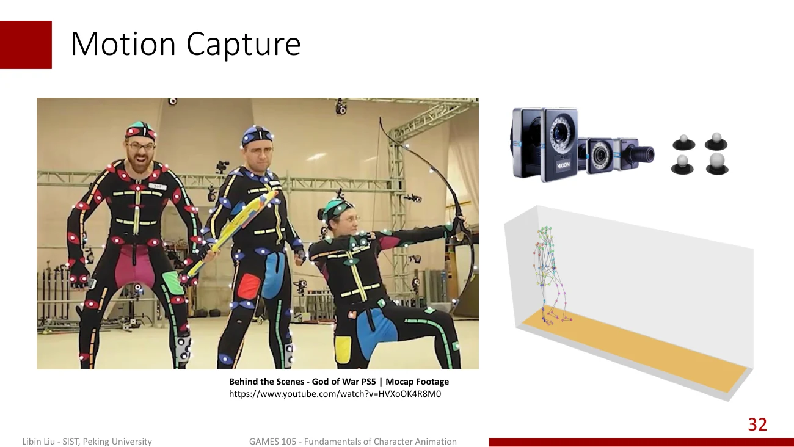
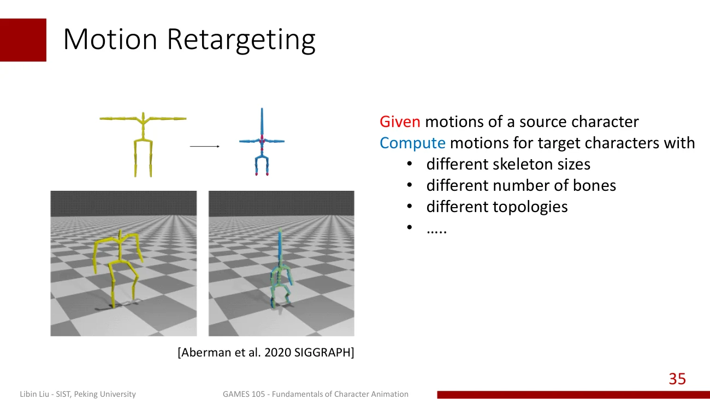
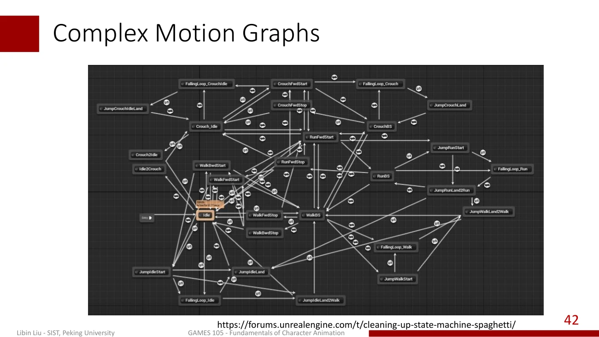
常见坑
动捕数据直接套用 → 脚滑、手穿模 → 需要重定向 + IK 修正 + 足部锁定。
状态机边数爆炸 → 维护困难、过渡生硬 → 考虑分层状态机或 Motion Matching。
Motion Matching 数据库太小 → 检索结果抖动 → 需要足够覆盖度的动作库和合适的特征（轨迹、姿态）。
UE / Unity 落地
UE：Motion Matching 插件（Pose Search）可直接在动画蓝图中使用；State Machine 在 AnimGraph 中编辑。
Unity：Animator Controller 是状态机；Motion Matching 需借助第三方包或自行实现检索。
055. 物理主线：PD 控制、轨迹优化与抽象模型
物理方法的核心是：不直接改姿态，而是施加力/力矩，让仿真产生姿态。课件先复习力矩定义：\(\tau = \sum_i r_i \times F_i\)，即力臂叉乘力。
最常用的低层控制器是比例-微分控制（Proportional-Derivative, PD）： \[ \tau = k_p (\tilde{q} - q) + k_d (\dot{\tilde{q}} - \dot{q}) \] 其中 \(\tilde{q}, \dot{\tilde{q}}\) 是目标姿态与目标速度，\(q, \dot{q}\) 是当前姿态与速度，\(k_p\) 是比例增益（把关节拉向目标），\(k_d\) 是微分增益（阻尼，抑制振荡）。PD 控制器可以跟踪目标轨迹，是物理角色动画的“万金油”。
但 PD 控制调参很难——课件用 QWOP 游戏和 Cosplay 幽默地说明“控制很难”。为了自动生成控制，研究者提出时空/轨迹优化（Spacetime/Trajectory Optimization）：把整段运动的目标写成优化问题，同时优化轨迹与控制（如 SAMCON、Wampler & Popović 2009）。
另一条路是抽象模型（Abstract Models）：用简化模型（如倒立摆、线性反馈 + 有限状态机 SIMBICON）先规划运动，再映射到完整角色。抽象模型牺牲细节换取可控性与鲁棒性，是物理角色动画的重要工程手段。
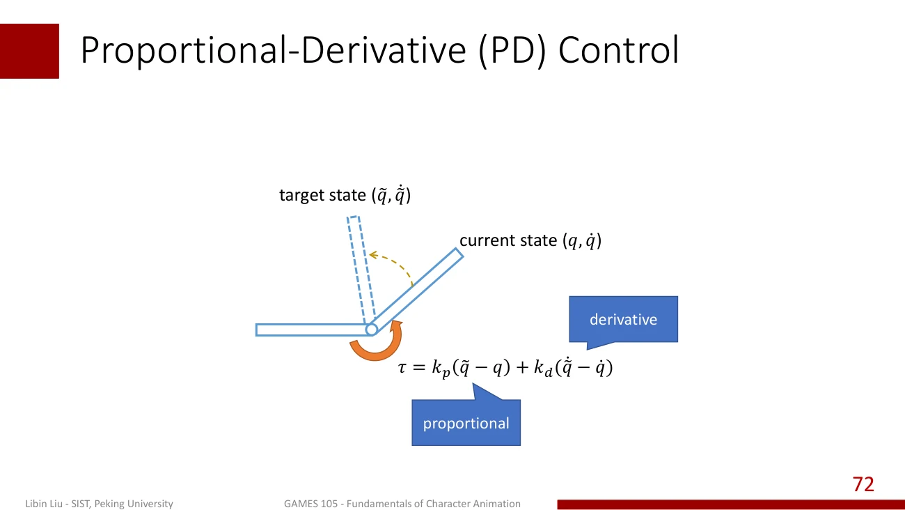
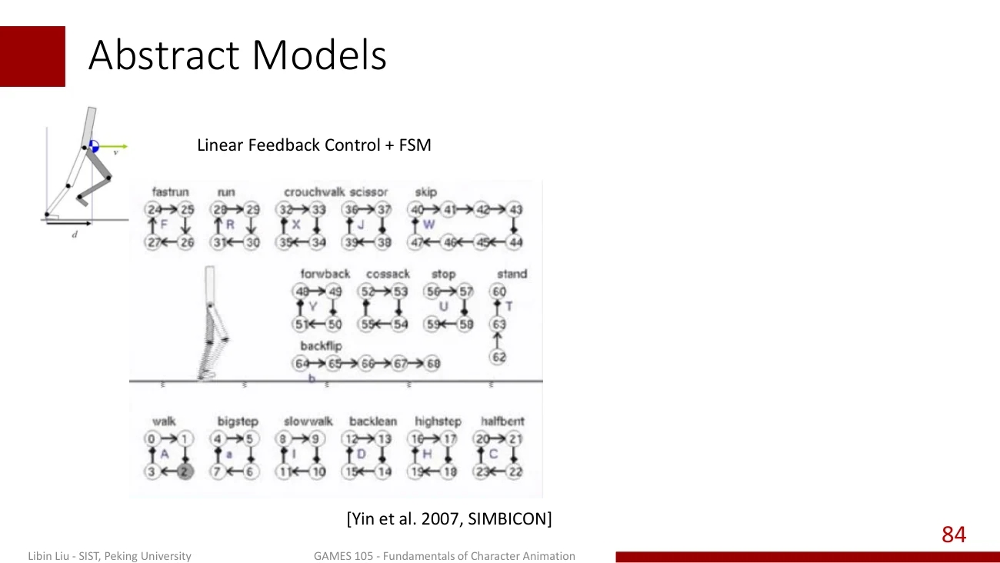
常见坑
PD 增益过大 → 关节振荡甚至发散 → 降低 \(k_p\) 或增大 \(k_d\)，并检查仿真步长。
PD 增益过小 → 跟踪迟缓、站不稳 → 适当增大 \(k_p\)，但需与 \(k_d\) 配合。
轨迹优化维度爆炸 → 求解慢 → 用抽象模型降维或分段优化。
UE / Unity 落地
UE：Physics Asset 的约束可配置驱动（Drive），其底层类似 PD 控制；Chaos 物理可做布娃娃。
Unity：Configurable Joint 的 drive 参数（positionSpring、positionDamper）就是 PD 控制。
PD 控制器伪代码（cpp）
// 对每个关节 j
float tau = kp[j] * (q_target[j] - q[j]) + kd[j] * (qd_target[j] - qd[j]);
// 将 tau 施加到关节，交给物理引擎积分
066. 学习主线：强化学习、生成模型与跨模态合成
当手工设计控制器太贵时，深度强化学习（Deep Reinforcement Learning, DRL）提供了一条新路：把控制问题建模为马尔可夫决策过程——智能体（Agent）在环境（Environment）中根据状态 \(s\) 输出动作 \(a\)，获得奖励 \(r\)。通过最大化累积奖励，网络学会控制策略。
课件展示了 DRL 跟踪控制器（如 DeepMimic、ControlGraphs）和多技能角色（Multi-skill Characters）：用状态机调度多个跟踪控制器，或学习调度控制片段。这让物理角色能完成跑、跳、转身等多种技能。
另一条学习路线是生成模型（Generative Models）：不显式做物理仿真，而是学习运动数据的分布，给定当前姿态和控制信号，直接生成下一姿态。课件用“Control Signal → Generative Next Pose Model → Current Pose”的循环图描述。这类方法（如 Motion VAE）能生成多样、自然的运动，但物理合理性需要额外约束。
最后是跨模态合成（Cross-Modal Synthesis）：从音频生成舞蹈/手势，从自然语言描述生成动作（如 MotionCLIP）。这打开了“用文本/音频驱动角色”的大门，是当前研究热点，也是 AI 辅助游戏开发的重要方向。
把学习型方法放回方法地图：它们既可能出现在运动学侧（生成姿态），也可能出现在物理侧（生成控制策略），还可能作为高层控制器（分层控制）。课件的“???”标记说明这一领域仍在快速演进。
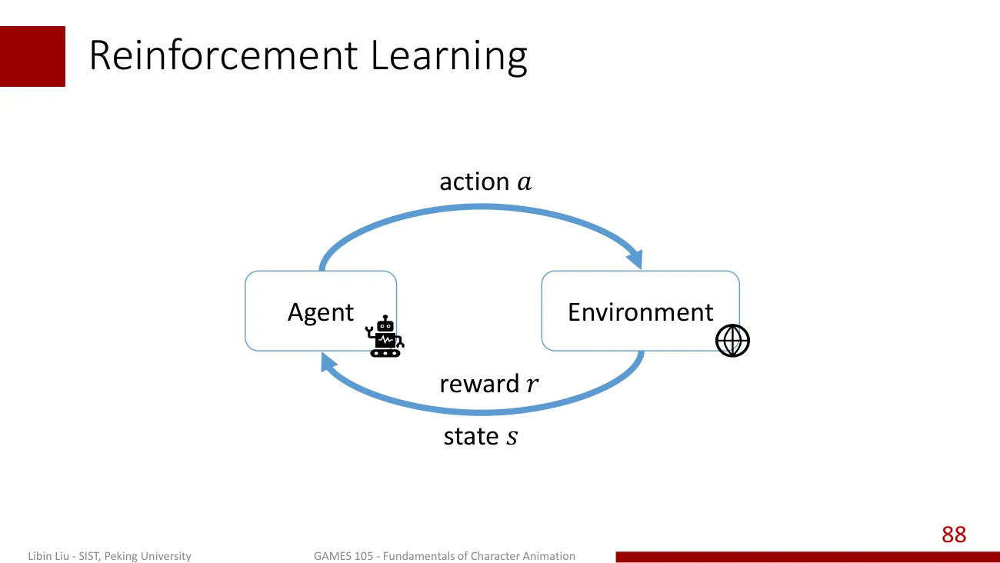
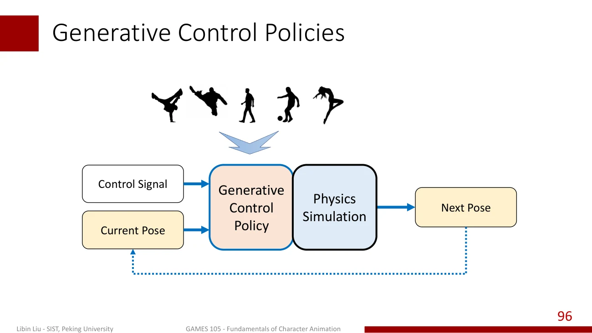
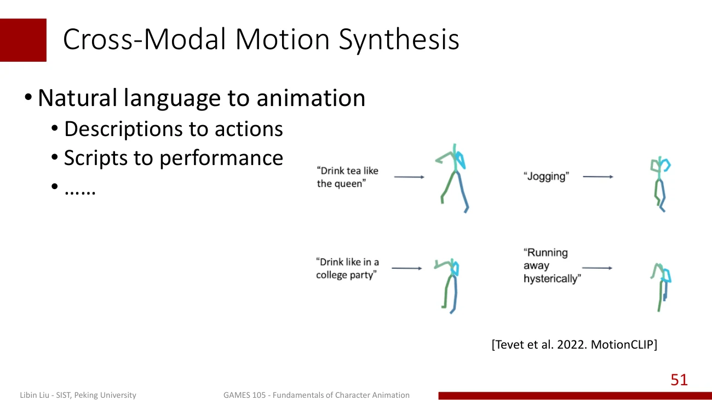
常见坑
把 DRL 当成万能药 → 训练不稳定、奖励设计难、sim-to-real 差距大 → 需要精心设计奖励与课程学习。
生成模型忽略物理约束 → 脚滑、穿模 → 需加物理正则或后处理。
跨模态合成数据偏差 → 生成动作单一 → 需要多样化的配对数据。
UE / Unity 落地
UE：ML Deformer、Learning Agents 插件可用于训练/部署学习型控制器；但 3A 项目仍以传统动画管线为主。
Unity：ML-Agents 提供强化学习训练框架；Barracuda 可推理 ONNX 模型。
077. 统一视角：控制信号→运动模型→下一状态
课件最后用两张对比图收束全讲：
- 运动学方法：控制信号 → 运动模型 → 下一状态。运动模型直接根据控制信号算出下一姿态，没有物理仿真。
- 物理方法：控制信号 → 运动控制 → 物理仿真 → 下一状态。控制信号先变成力/力矩，再由物理引擎积分出下一状态。
这个统一视角的价值在于：无论你面对的是关键帧、动捕、动作图、Motion Matching、PD 控制、轨迹优化、强化学习还是生成模型，都可以问三个问题——
- 控制信号是什么？（关节角度？目标姿态？力？文本？）
- 运动模型是什么？（插值？数据库检索？物理仿真？神经网络？）
- 下一状态如何产生？（直接赋值？积分？采样？）
课件还列出了本课程不覆盖的内容：不教 Maya/Motion Builder/Houdini/Unity/UE 的具体操作，不教“如何成为动画师”。课程聚焦的是动画工具背后的方法、理论与技术。这意味着学习本课程后，你应当能理解引擎动画系统的原理，并具备自己实现或改进算法的能力。
最后，课件给出了课程项目安排：用 Python + 物理引擎（pybullet/ode）完成五个项目，覆盖 FK/IK、交互角色、蒙皮、仿真与布娃娃等。这与本讲的“方法地图”一一对应，建议在学习每个方法时同步动手实现。
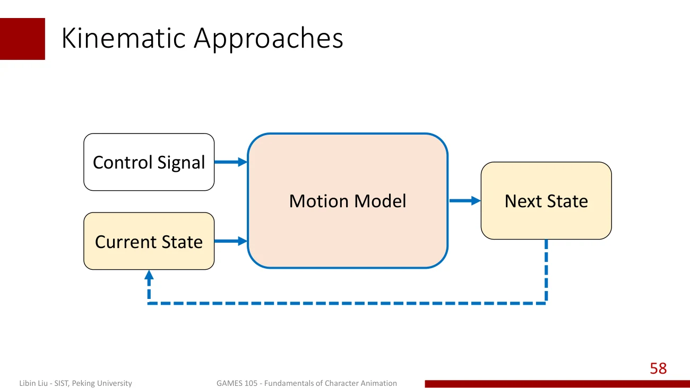
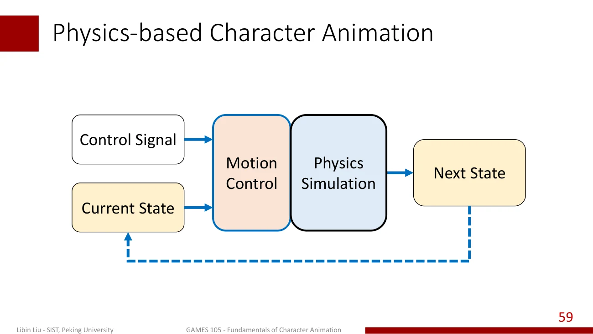
常见坑
混淆“运动模型”与“渲染” → 运动模型只产生姿态，渲染是另一层。
以为课程会教软件操作 → 课程教原理，软件操作需自学。
UE / Unity 落地
UE：AnimGraph 的节点链就是“运动模型”，Control Rig 可插入自定义控制逻辑；物理资产在物理线程中积分。
Unity：Playable Graph 是运动模型；ArticulationBody 在 FixedUpdate 中积分。
引擎对照表
| 概念 / 效果 | Unreal Engine | Unity |
|---|---|---|
关键帧动画 | Animation Sequence + 曲线编辑器 | Animation Clip + 曲线 |
正向/反向运动学 | Control Rig 的 FK/IK 节点 | Animation Rigging 的 TwoBoneIK 等 |
动作重定向 | IK Retargeter | Humanoid Avatar 的肌肉映射 |
状态机/动作图 | Animation State Machine | Animator Controller |
Motion Matching | Pose Search 插件 | 需第三方或自研 |
PD 控制/物理驱动 | Physics Asset 约束驱动 | Configurable Joint 的 Drive |
强化学习训练 | Learning Agents 插件 | ML-Agents |
术语双语表
| English | 中文 | 说明 |
|---|---|---|
| Character Animation | 角色动画 | 生成人/动物/虚拟生物等角色随时间变化的运动。 |
| Forward Kinematics (FK) | 正向运动学 | 已知关节旋转，计算末端执行器位置。 |
| Inverse Kinematics (IK) | 反向运动学 | 已知末端执行器目标位置，反解关节旋转。 |
| Motion Capture | 动作捕捉 | 记录真人演员运动并映射到虚拟角色。 |
| Motion Retargeting | 动作重定向 | 把源角色运动映射到不同骨架/体型的角色。 |
| Motion Graphs / State Machines | 动作图/状态机 | 用节点和边组织动作片段，支持交互切换。 |
| Motion Matching | 运动匹配 | 每帧从动作数据库中检索最匹配的下一帧，替代手工连边。 |
| PD Control | 比例-微分控制 | 用比例项拉向目标、微分项提供阻尼的经典控制器。 |
| Deep Reinforcement Learning (DRL) | 深度强化学习 | 通过奖励信号训练神经网络控制策略。 |
| Cross-Modal Synthesis | 跨模态合成 | 从文本、音频等非运动信号生成动作。 |
课后练习
01 用自己的话解释运动学方法与物理方法的核心区别，并各举一个适合的应用场景。
查看答案
提示：
从“直接改姿态”与“施力让仿真产生姿态”切入。
运动学方法直接更新角色姿态/速度/加速度，不经过物理仿真；物理方法在关节上施加力/力矩，由物理引擎积分出姿态。运动学适合需要精确控制、可编辑的场景（如过场动画、关键帧表演）；物理适合需要真实接触与环境交互的场景（如布娃娃、被击倒、复杂地形行走）。
02 给定 PD 控制公式 \(\tau = k_p (\tilde{q} - q) + k_d (\dot{\tilde{q}} - \dot{q})\)，说明 \(k_p\) 和 \(k_d\) 各自的作用，以及调参过大/过小会出现什么现象。
查看答案
提示：
比例项像弹簧，微分项像阻尼器。
\(k_p\) 是比例增益，把关节拉向目标姿态，过大导致振荡/发散，过小导致跟踪迟缓、站不稳；\(k_d\) 是微分增益，提供阻尼、抑制振荡，过大导致运动迟钝，过小导致振荡。实际调参需二者配合，并注意仿真步长。
03 动作重定向（Motion Retargeting）要解决什么问题？列出至少三个需要处理的差异。
查看答案
提示：
想想源角色和目标角色的骨架。
要解决源角色与目标角色骨架不一致导致运动无法直接套用的问题。需要处理的差异包括：骨骼尺寸（身高、肢长）、骨骼数量、拓扑结构（关节连接关系），还可能包括体型比例、关节限位等。
04 假设你要在 UE 中实现一个“角色走到桌前拿起水杯”的交互，请描述你会用到哪些动画技术，并说明它们分别属于运动学还是物理方法。
查看答案
提示：
从移动、手部定位、抓取、物理交互几个环节考虑。
移动可用 Motion Matching 或状态机驱动走跑动画（运动学）；接近桌子时用手部 IK 让手精确对准水杯（运动学）；抓取可用 Control Rig 或动画序列（运动学）；水杯被拿起后可用物理约束/物理资产模拟（物理）。整体是运动学为主、物理为辅的混合方案。
05 为什么课程强调“不教 Maya/UE 操作，而教方法原理”？结合本讲的方法地图谈谈你的理解。
查看答案
提示：
工具会变，方法相对稳定。
因为软件操作会随版本变化，而背后的方法（FK/IK、动捕重定向、状态机、PD 控制、强化学习等）是跨工具通用的。掌握方法地图后，无论换到哪个引擎或工具，都能快速定位问题、选择合适技术，并具备自己实现或改进算法的能力。